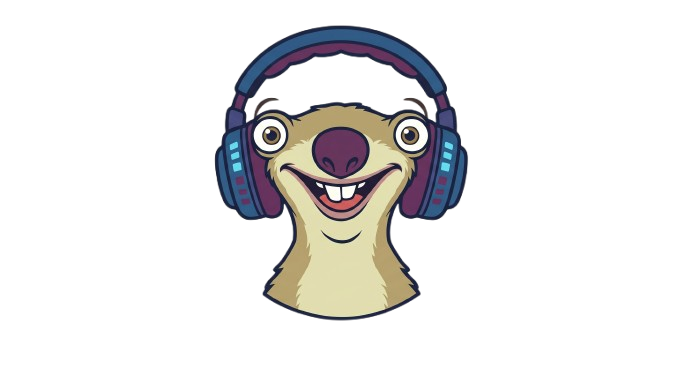

Les autres
Calcul en temps réel
- Le fichier est chargé en RAM
- Volume et vitesse recalculés à chaque lecture
- Le CPU travaille pendant que vous jouez
- Ce que vous entendez ≠ ce que Discord entend

SidSoundboard GitHubSoundboard Windows · open source
Une soundboard qui balance vos sons sur Discord sans jamais toucher à vos FPS. Tous les effets sont calculés avant la lecture : quand vous appuyez sur une touche, le processeur n'a plus rien à faire.
Cliquez une dalle, ou tapez sa touche. Espace coupe tout.
Sons de démonstration synthétisés dans le navigateur. Dans l'application, ce sont vos fichiers.
Le moteur
La quasi-totalité des soundboards applique le volume, la vitesse et les effets en temps réel, pendant la lecture. C'est du calcul, donc du CPU, donc des micro-freezes en jeu. SidSoundboard fait l'inverse : FFmpeg fabrique le fichier définitif en arrière-plan quand vous réglez le son, une seule fois.
Calcul en temps réel
Rendu pré-calculé
Double sortie
SidSoundboard pilote deux cartes son en même temps et garde les deux flux synchronisés. Votre casque reçoit un volume confortable, le câble virtuel envoie le son à Discord au niveau que vous voulez.
VB-Cable s'installe séparément — SidSoundboard ne l'installe pas à votre place et ne touche pas à vos périphériques système.
Dans la boîte
Attrapez les poignées sur la waveform et gardez uniquement le passage qui compte. La coupe est exacte à l'échantillon près.
Quatre réglages par son. Un rendu boosté est limité proprement au lieu de saturer.
Entrée et sortie réglables individuellement, plus un crossfade global entre deux sons enchaînés.
Collez une URL YouTube ou YT Music : le son atterrit dans la bibliothèque, prêt à être découpé.
Vos touches fonctionnent même quand le jeu a le focus. Une touche panique arrête tout, instantanément.
Le fichier d'origine n'est jamais modifié. Vous pouvez revenir sur n'importe quel réglage, à tout moment.
Installation
Un seul fichier autonome, rien à installer. Windows peut afficher un avertissement SmartScreen tant que l'exécutable n'est pas signé : « Informations complémentaires » puis « Exécuter quand même ».
Dans Réglages, sélectionnez votre casque comme sortie principale. Activez la double sortie et pointez la seconde vers VB-Cable si vous voulez alimenter Discord.
Importez vos MP3 et WAV ou collez une URL YouTube, réglez chaque son dans l'éditeur, assignez vos touches. C'est prêt.
Gratuit, open source, sans compte et sans télémétrie.